Course starts soon..
We will start now with a quiz based on last week's material
You have 6 minutes to answer the quiz.
The quiz link:
Quiz Link
It will be copied in Mattermost and in the Zoom chat.
we will add your project to our Project Page
- What are word embeddings?
- What are positional embeddings?
- How are they combined?
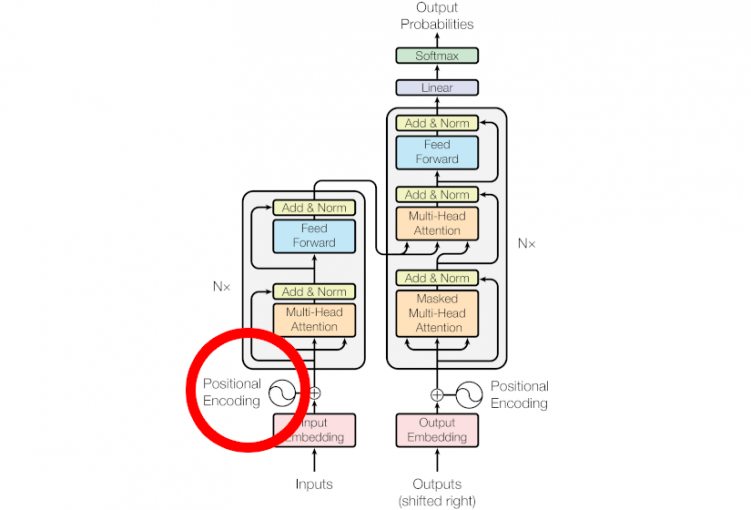
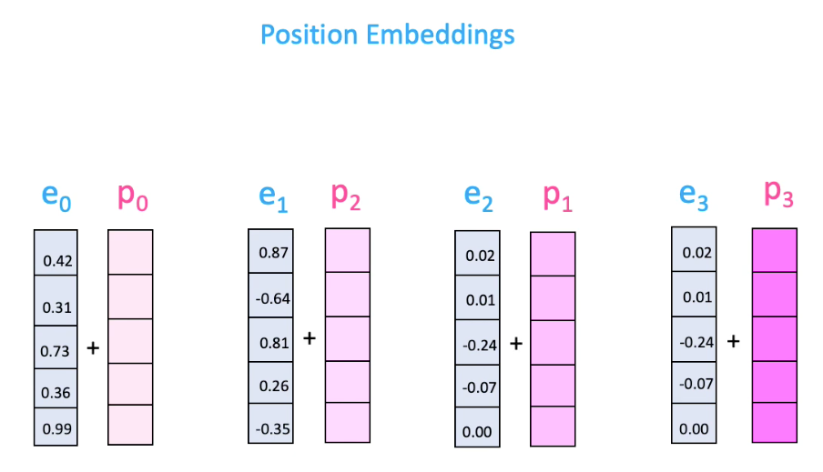
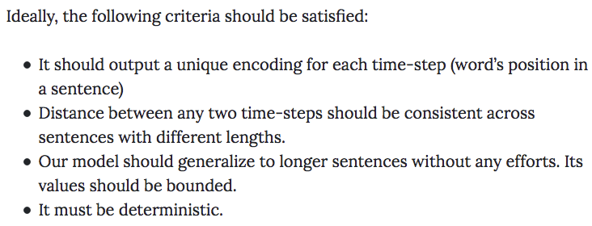
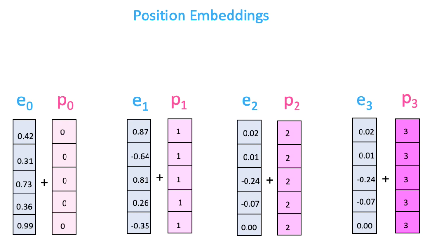
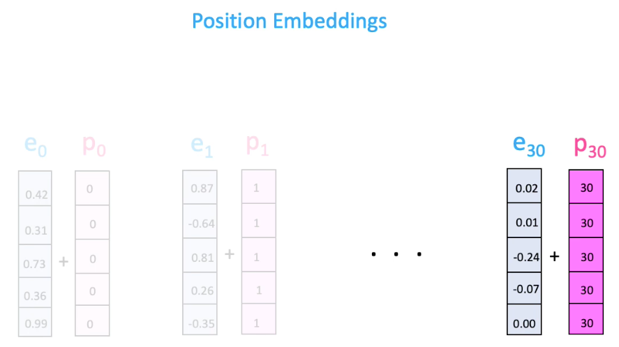
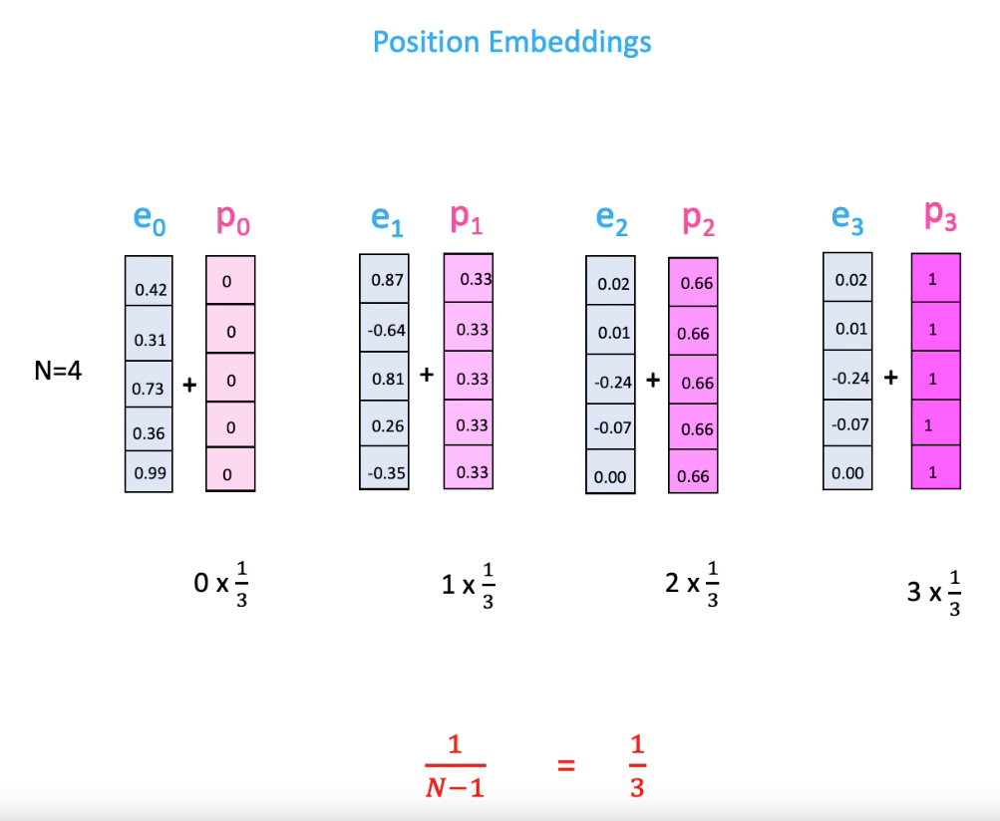
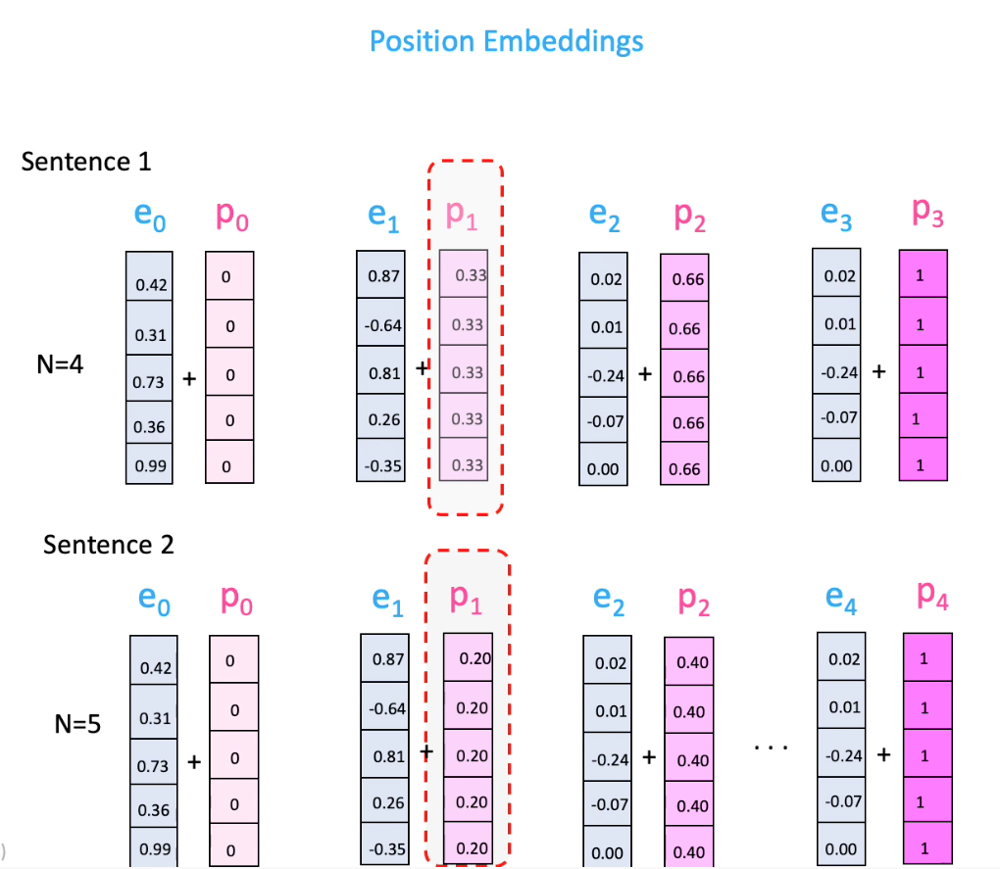
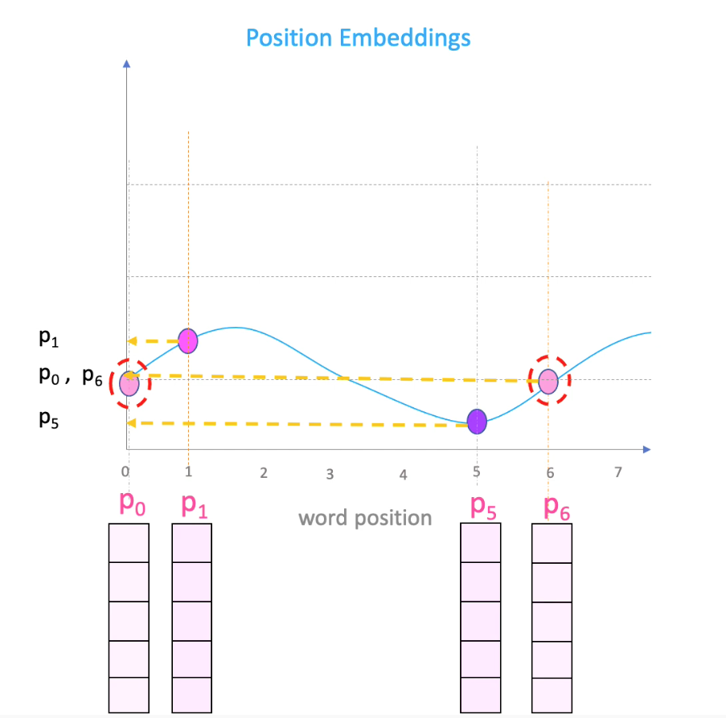
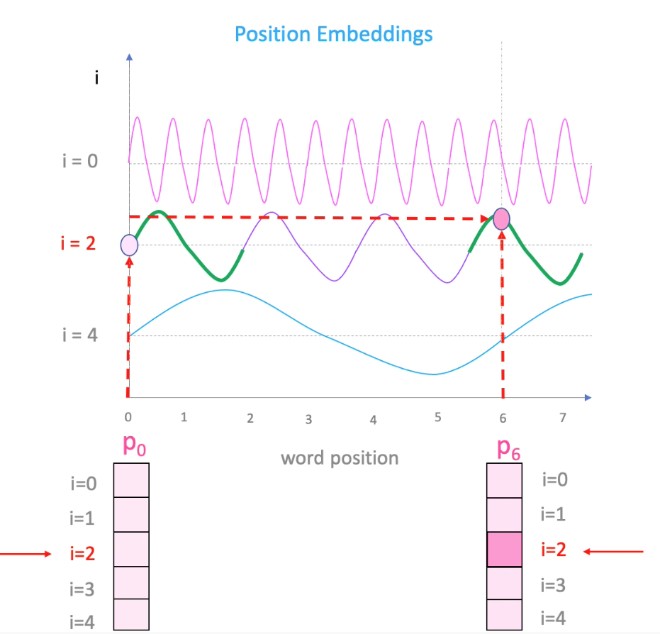
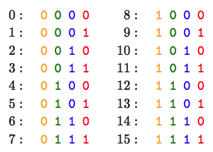
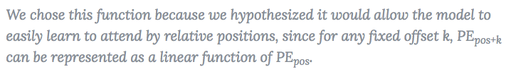
Here the proof! [6]
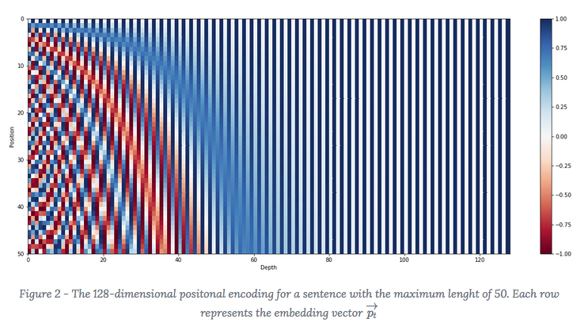
Discussion on Tensorflow or Discussion on Reddit
- You are done with the courses!
- Finish the final presentation!